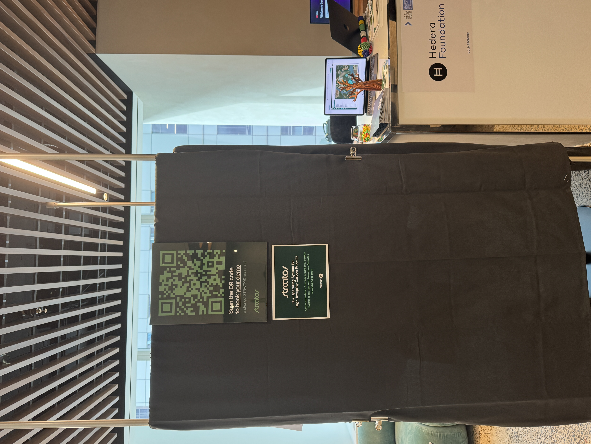
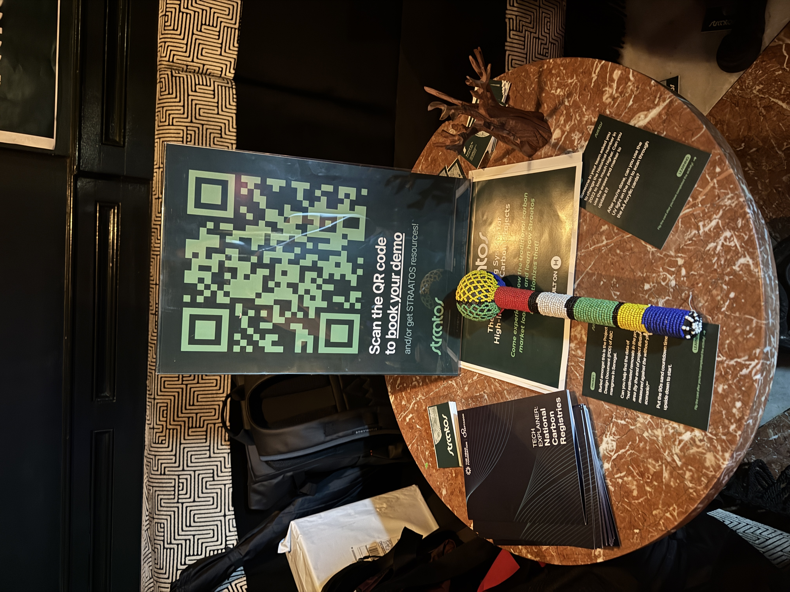
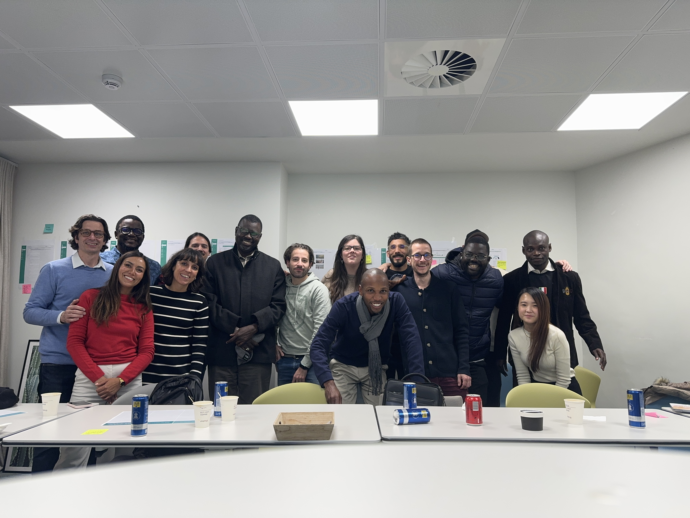

Community Activation | Lightbox Gallery


LIGHTBOX Gallery is a collaborative initiative by PROJCT and EJAR that transforms Hong Kong’s public spaces into a living gallery, where creativity can emerge and thrive when it is nurtured carefully. By utilising places not traditionally seen as artistic venues, the initiative uncovers the creative potential embedded within everyday urban spaces and cultivates environments where creativity can take root and grow.
The gallery came to life through the inaugural collaboration of four talented artists—Au Kin Wai Johnny, Chan Man Yi, Yeung Shu Nga Emma, and Yuen An Tung Ariel. Since then, this project has evolved into a dynamic exhibition platform that celebrates cross disciplinary collaboration and international exchange.
By turning the city itself into a canvas, streets become more than routes of movement; they evolve into spaces of interaction, reflection, and social engagement. Unlike traditional galleries, LIGHTBOX Gallery also features a month-long auction, inviting participation from local audiences and art enthusiasts around the world. This hybrid experience not only bridges Hong Kong’s vibrant urban culture with global artistic networks, but creates an environment where artistic expression can thrive, regardless of location, fostering dialogue that transcends geography.
Beyond exhibition and exchange, LIGHTBOX Gallery sees Hong Kong as a backdrop reflecting a hub for cultural exchange where Eastern and Western perspectives intersect in a global city. By focusing on the potential of creativity within hidden spaces, the gallery introduces subtle yet impactful shifts within the urban environment, encouraging attentiveness of one’s surroundings. Each installation invites viewers to observe the city’s everyday transitions and appreciate the small moments of change that shape urban life.
Innovative Campaign | ‘Last Wishes’


Every Wish Lasts: Having the toughest conversation
In a society where death is a profound taboo, our challenge was to help position our client not just as an insurer, but as a compassionate leader in life’s most important conversations. Further research revealed a critical insight: 71% of Hong Kong residents had never shared their final wishes, leaving families in emotional and financial uncertainty. This became the strategic cornerstone for the 2025 “Every Wish Lasts” (成就每一種遺願) campaign, transforming end-of-life planning from a daunting task into a meaningful, human-centric dialogue.
We began with a city-wide prototype: anonymous “teaser” walls posing, “When you’re no longer here… what’s your wish?” The overwhelming public response provided authentic content for the next phase, where we repainted the walls with the collected wishes, unveiling our client’s branding and launching a full-scale OOH campaign.
The initiative expanded to normalize the conversation across diverse contexts:
- Kicked off with a survey asking Hong Kong a simple question: "If you're no longer here, what's your wish?"
- We took the conversation to the street and painted murals around Hong Kong asking the same question.
- From Singles’ Day to a Day of Connection: We distributed 600+ paired drinks with attached last wishes, transforming this into an opportunity for reflection.
- Film Screenings & Discussions: Partnership with Emperor Cinemas for a special screening of The Last Dance and a collaboration with Savour Cinema for The Farewell combined film, food, and reflection, where guests dined on themed meals with ‘End-of-Life’ wishes discussion facilitated throughout.
- Planning Tools: We created 40 question cards and keepsake books to help families start the dialogue at home.
- Art as Reflection: Art pieces curation through our client's Art Gallery – ‘Every Love Lasts’ on love letters to leave behind.
- “Last Wishes” Magazine: A guide featuring 19 real-life stories from professionals like nurses and funeral directors, pairing profound narratives with a practical checklist.
- The campaign culminated in an immersive art installation at Art Basel Hong Kong 2025. “Conversations of Life: Every Wish Lasts” guided visitors on a two-act journey. In the Reflection Lounge, there were soundscapes of anonymous wishes that prompted self-reflection. Visitors then were able to digitally inscribe a personal wish, casting a ceremonial coin into a “Wishing Well,” where their wish was dynamically projected onto the walls. A keepsake photograph of this moment was given upon leaving the experience, serving as a powerful affirmation.
These integrated activations perfectly encapsulated our strategic innovation: transforming legacy planning from a taboo into a tangible, artistic, and deeply human act, solidifying our client’s role as a trusted life advisor.
Strategy | Life Insurance company | Discovery → Build (2023–2026)


In late 2022, this company ranked #27 in industry name recognition (YouGov) and held less than 1% of market share in Hong Kong. We were engaged to help with a new positioning strategy through a Discovery project.
Launched in 2023, Discovery 1.0 gathered market insights via qualitative interviews, a quantitative survey, and market data. We defined brand opportunities through experiential workshops, then set potential directions by creating an ideas library, sharing findings across teams, and prioritising development directions. The process brought internal stakeholders together to deliver a plan of action.
Based on this, we created four story directions — Identity Enabler, Always Here, Pioneering Communities, and Cut through the Noise — along with activation ideas that would guide Activations and Product Strategy over the following three years.
From there, we delivered:
Brand Assets & Playbook: Brand Story deck, booklet and advertisements, launched "The Key" magazine covering life topics relevant to insurance, festive designs (Calendar/Diary, Mooncake Sleeve, etc), Wealth Centre Assets, and more.
Product Strategy: Beyond product proposition and landscape research, we developed a Product Framework and led renaming efforts for key product launches — ensuring naming and positioning worked together.
Customer Experience: CRM Workshops, Template Development, Customer Journey Mapping, Event Ticketing Portal UI/UX, Conversion Tool Platform Creation.
Cross-department Playbooks: Agency Recruitment Strategy to drive culture change and attract higher-quality agents.
Community Engagement: Ideated and created VOICES — an integrated insight ecosystem blending internal and external perspectives to foster dialogue, co-creation, and systemic foresight, engaging thought leaders in experimental activities.
Experiential Marketing: We proposed, created the strategy, connected with ecosystem partnerships, and built the execution for Art Basel Hong Kong from 2024–2026 (3 years). The "Life Forest" installation in 2024 reached 6.33 million people, generating HK$8.097 million in PR value.
Innovative Campaigns (strategy, ideation, development, and build/execution):
Every Way of Legacy (MyLegacy III): The Every Way of Legacy campaign redefined life insurance through MyLegacy III, a flexible policy that accommodates diverse values around legacy — catering to families without children, single individuals, and LGBTQ+ couples. Our integrated omni-channel approach featured immersive experiences like the "Life Forest" at Art Basel 2024 and thought leadership through the magazine series "The Key." The brand ranking went from #21 to #16 within one quarter, with a 516% increase in social media interactions, over 15 million OOH impressions, and a significant sales surge.
Every Way of Wish: This campaign transformed the conversation around end-of-life planning in Hong Kong from 'taboo' to transformative. Using word-based campaigns, we created powerful movements around end-of-life planning — becoming the brand that owns the term "Wish" in Hong Kong. Results: HK$124.4M in PR value, 455 media coverage pieces, >25k organic engagements, 785M impressions, 2M OOH views, 3.4K in-person attendees, 10K microsite visitors.
The effect trickles down. Brand awareness lifts consideration. Consideration drives leads. Leads convert to market share. And market share builds cultural relevance — making every subsequent campaign easier and more effective. Over three years, brand recognition moved from #27 → #21 → #16. In 2026, up to #15!
Recognised globally and in Hong Kong: Fast Company World's Most Innovative Company (2025) for Every Way of Legacy, Winner of HKFI Awards Outstanding Integrated Marketing Award for Every Wish Lasts, Winner of Bloomberg Awards in Integrated Marketing for Every Way of Legacy, 6 Marketing Event Awards for Every Wish Lasts, Creative Review Awards shortlist and more.
We don't just hand over decks. We stay in the room and build together — from Discovery and Strategy to ideation, development, and build.
Product Strategy + Launch | STRAATOS






Rebuilding trust in climate data: how PROJCT helped launch STRAATOS at New York Climate Week 2025. A two-year journey from a gathering in Senegal to a working platform on the floor at NYCW.
Context
We worked closely with STRAATOS, a carbon credit project platform built around the core principles of transparency and community equity, supporting the vision from its earliest days through to the launch campaign at NY Climate Week 2025. Our journey began in 2022 in Saly, Senegal, where we stepped in as facilitators and organised sessions with a diverse group of stakeholders — almost 100 people spanning the UN, project development and investment, blockchain tech, and social justice. That gathering is where the seed of the idea was planted.
What is STRAATOS, and why does it matter
STRAATOS is the 'Operating System' of the VCM (voluntary carbon market) — the system through which carbon credits are traded. These credits represent a reduction or removal of greenhouse gases from the atmosphere, and governments, companies, and even individuals can buy them to offset their emissions.
The voluntary carbon market matters because it mobilises new resources for emission reductions and sustainable development that otherwise wouldn't exist. The aim is to bring real-time traceability and accountability to every stage of a project's lifecycle, unlocking the scale, confidence, and impact that nature-based solutions urgently need.
The idea behind STRAATOS was born from the 15+ years of carbon market expertise of ALLCOT Group. In a market struggling with credibility, STRAATOS aims to bridge that gap with a clear commitment to prioritise the most vulnerable stakeholders: local communities, Indigenous peoples, and the project developers on the front lines of climate action. The goal is to tackle the deep-rooted inefficiencies and trust issues in carbon markets by building an open, transparent digital infrastructure.
The value chain breaks down into four main parts: Originators reduce or remove carbon in the atmosphere. Captured carbon is then converted into credits and stored in a repository. Brokers and exchanges trade both the original credits and derivative financial instruments — some speculative estimates put this market at over $1 trillion USD annually by 2050. Customers looking to offset, whether firms or individuals, complete the value chain.
Fraud and falsification can emerge at any stage, particularly around claims behind a credit that don't hold up. Steps 1 and 2 are where the cracks tend to appear, and these are the steps STRAATOS sets out to fix. Built on Hedera Guardian, an open-source decentralised infrastructure that anchors every data point to a public ledger, making each claim traceable from the ground to the credit.
The challenge
Voluntary carbon markets are, by most accounts, a broken system. Three challenges sit at the centre: keeping track of project data is a struggle, there is mistrust in what's reported, and the wrong people end up with most of the benefits.
Our key task was to help build an MVP shaped around these discovered challenges — translating the strategy into a product roadmap built around three principles: keep track of data, build trust, foster openness.
What we did
We led the UI/UX design and facilitated workshops in Madrid with regulators and developers to help define the MVP. Regulators brought the questions verifiers would ultimately ask, while developers shared the day-to-day challenges they face on the ground. Together, these sessions helped shape which features were essential to the MVP and which could be developed in later phases.
The most recent milestone was the launch at New York Climate Week 2025. We helped develop the concept and designed the booth experience: a phone prop with pre-recorded pain point examples, a thick stack of PDD (Project Design Document) inside a drawer with a 30-second challenge for people to find certain information to illustrate the manual inefficiencies, a digital platform live demo and more. Alongside the booth, we supported the team in their speaking opportunities, hosted conversations with stakeholders on the floor, and helped gather and qualify leads through the week.
Our takeaways
NYCW highlighted both the potential and the need for integrity in the VCM. High-integrity carbon markets can accelerate climate action and drive innovation, but greenwashing and the lack of transparency around carbon credits have to be addressed first.
STRAATOS, as the 'OS' of high-integrity carbon projects, sets out to address governance, transparency, verification, additionality, and community benefit through a robust digital infrastructure. And what this work clarified for us is that the fastest way to build trust in a system is to make the system itself visible.
2028 Research | SKWAT, Tokyo


In 2028, the LA Olympics aims to be the first global sports event to use existing structures rather than building new stadiums. This effort will bring ideas around reimagined space into the mainstream, raising demand for players that know how to reuse and repurpose.
SKWAT, a Tokyo-based collective conceived in 2019, is one of these. The members have been transforming spaces around Tokyo and beyond since the early 2010s under various identities.
We are in a building in the luxury locus of Aoyama, Tokyo. A place so devoted to the modern handbag temples of lux that squatting seems almost unimaginable among the high fashion. Of course, this particular site is somewhat sanctioned. SKWAT has three different spaces in the building — a bookshop run by twelvebooks, a Lemaire store and the experimental space PARK. Together they offer a view on how to reimagine space as an experiment, a way to revive the city at large. Other spaces came before this and more are to come.
"The initial idea was to move from space to space. Vacant spaces within the city. But during COVID, we figured that it's also nice to have some sort of headquarter. We have to leave this space, too," says Keisuke Nakamura, a founder of SKWAT and the visionary behind its aesthetic activism. "It's about expressing inclusiveness. Architecture and design can have a visual language that is very intimidating in material choice — steel, marble, … — depending on how you use it can be very intimidating and feel exclusive. We don't really touch the base of the space and we use what we have at hand. Materials that are familiar to everyone. Cheap materials like roll carpet. I don't think it's very intimidating."
"I think the visual language for us here is approachable. I hope so," Keisuke said, explaining SKWAT's method of building on the signature design of a space. "We touch on the main substance of the building, using what we have there."
"We also reuse everything for a lot of projects. For example, the Lemaire store here is built with materials from an old Osaka house. It can be completely dissembled and moved if needed. Sometimes we buy or purchase new things but otherwise rent, in the basement ('PARK' space) the scaffolding structure is all rental. And we often change the structure and shape depending on what we want to do in the basement, like Legos. I love an adaptable approach that adds new value to a space. Very flexible."
Sustainability and fiscal responsibility are core to the LA Games Plan: no new permanent venues are needed in 2028. This approach has not been the norm for major sports events, with histories of local debt and too many stadiums, although the Paris Games in 2024 came close, with 95% of venues existing or temporary. In fact, SKWAT was set up with the expectation of Tokyo Olympics overbuilds in mind as a way to open up unused urban spaces for the public to discover.
Let's be honest, there's nothing new about reusing things. It's as old as life itself. But there's something new about rarely reusing and just erasing. And so traditional practice becomes modern. In utilising unused spaces and designing for modularity, the design principle becomes about achieving maximum results with minimum interference in the foundational environment. Perhaps even bringing out and putting on a pedestal the unique elements of a place. It allows us to be non-prescriptive and dream of multiple futures for a place, rather than just one or a few.
"It's a very broad range, the projects we do," says Irene Yamaguchi of the SKWAT team, as we eat bento from Kisurin at the SKWAT/twelvebooks space in Aoyama. "It's a wide variety of approaches. And I think that creates a very interesting synergy. We all have a different background, from architecture, fine arts, interior design, and research. It makes it about collaboration and the synergy that is created in a diverse team. Education creates interesting results, so we want to bring that next in the form of a learning space to include more people with different backgrounds but a sort of similar vision. That's also one lesson we learned through some of the projects. There needs to be a common base."
This common base has been missing in Tokyo and many other cities around the world. Many emerging and fast growing cities that used to have life happening on the streets and back alleys are continuously being modernised with new buildings pushing out independent public space. In New York tough busy streets were transformed into safe spaces for pedestrians and bikers with simple tools like painting part of the street to make it into a plaza or bus lane. Knowing how to read a space helps you make it function better by reallocating the space that's already there and breaking it into its component parts and rewriting the source code. Simply having a picnic might also be a subversive act of change making.
"We're open to somehow connect to the people who come into our project through SKWAT. We have met a lot of interesting people who gather here not only from Japan but also from abroad," says Irene. "We are not trying to influence but perhaps more be the catalyst of a process, a way of thinking, looking at things or approaching things, a range of processes. A platform for all sorts of different creators. It has no fixed form, really. Of course we're trying to find like minded people that have a similar vision and we hope to, I don't want to use revitalize, vacant space, voids, interests while trying not to have this top down approach, like a lot of cultural institutions, for example art museums, often do."
"PARK is a space made for people to use freely. If many people could feel free there, then I think we'd be closer to our ideal image of SKWAT. Freedom to live and then freedom to express themselves," as Keisuke put it. "We learned that few knew how to use free space. If you would offer such a place for example in London it could work. But here, somehow nobody came. We concluded that there needs to be more purpose. Purpose, even if it's buying a coffee, a simple exchange of money and receiving something."
"Reconstructing things according to the zeitgeist, instead of copy-and-pasting, will lead to new values," continues Keisuke. "I want to do a lot with SKWAT. I hope our ideas, even the ones we can't imagine right at this moment, will spread to the world and bring something unprecedented. That's how I want to change modern-day people's values."
We come back to the surroundings of the current project, the Herzog & de Meuron designed Prada 'Epicenter Tokyo' — peak lux indulgence — is barely a block away. How does this theory of change for SKWAT to catalyse others to do things differently really come into play here?
"It's a contrast we play with, being based at the Epicenter. Kind of fun. Nobody would expect that kind of space or culture that we have," says Irene. "Intentional or not but I kind of like the way that you get drawn in to the building. Is it a fashion store like everything else?"
Almost like a little trap. The Lemaire front store feels comfortable in the context of Aoyama. And then you go upstairs to twelvebooks or downstairs to PARK and get trapped deep in culture by a collective of artists and thinkers aiming to bring people together by challenging the spatial and cultural boundaries in society. In a good way.
Immersive Experience | HOKA Runner's High, Art Basel Hong Kong


Presented at Art Basel Hong Kong 2026, Runner’s High is an immersive installation by HOKA that explores the psychological and sensory thresholds of endurance.
Rooted in the brand’s ethos of movement as transformation, the work draws from the lived experiences of ultra-marathon runners, where the body is pushed to its limits and perception begins to shift.
At extreme distances, runners often report hallucinations and altered states of awareness. Time extends, the body dissolves, and reality becomes distorted. In these moments, runners describe a paradoxical state: losing themselves while simultaneously becoming more present than ever before.
The installation unfolds as a spatial journey across two contrasting environments: the Inner and the External.
The Bright Side evokes the external world of the run, expansive, luminous, and exhilarating. It captures sensations of velocity, openness, and elevation, where the body feels light and the landscape unfolds in rhythm with breath and stride.
In contrast, the Dark Immersive Space turns inward. Here, visitors encounter the mental terrain of endurance: disorientation, repetition, and hallucination. Light fragments, sound distorts, and tactile cues blur the boundary between body and space, simulating the altered states reported in ultra-distance running.
Together, these dual environments create a shifting perceptual field, where clarity and distortion coexist. Runner’s High invites visitors at Art Basel Hong Kong to not only observe but inhabit this threshold, offering a visceral glimpse into the fleeting moments where exhaustion transforms into euphoria, and reality gives way to something more expansive.
Strategy + New Business Model | Van Alen Institute

Entering 2020, Van Alen Institute — a 125-year-old heritage organization in architecture and urbanism — wanted to evolve its program and mission. The pandemic, social unrest, and a new endowment created opportunities for change. Working with Thirdway, we set out to empower VAI by helping them understand their future context, align on their ambition, co-create the strategy to get there, activate the strategy, and consider organizational and governance shifts.
What we wanted to achieve:
A collective institutional understanding of VAI's current and future operating context and landscape. A high-level blueprint of how VAI might operationalize the strategy towards their new mission (people, process, technology). An initial understanding of institutional autonomy so VAI could repeat this process on their own.
What we wanted to overcome:
Differing points of view in the ambition of the organization (scale, geography, etc). Respect of institutional reputation while understanding VAI brand in a wider ecosystem outside architects and urbanists in NYC. Respect of a culture of non-profit operations (for 125 years) vs entrepreneurial pioneers — a collective alignment around what to respect, focus on and let go.
Our approach:
We took a holistic and adaptive approach centered on co-creation, provoking broad thinking, and creating future resiliency with a bias towards action. We were not there to tell VAI where to go and how to get there — but focused on shifting mindsets and shifting behaviors, because it's hard to say things will be different, and harder to do things differently.
We believed in an adaptive strategy, not a silver bullet: developing a clear strategy that can guide actions ahead, while building confidence in that strategy over time through defined pilots that facilitate learning and improving resolution. And we focused on what was actionable and applicable — pushing their thinking while ensuring the future was attainable, with a focus on what they could do differently tomorrow.
Our process:
Alongside four formal phases — Discovery (insights development), Strategy (strategic roadmap), Pilots (ways of working), and Big Idea (operationalizing the shifts) — we also spent time enabling organization and governance agility and decision making, helping operationalize the strategy, navigating what's needed in the future operating environment, coaching, and creating network connections.
Result:
A clear, directional statement now guides where VAI places its efforts and resources: VAI shares its core assets — an interdisciplinary network and deep community-driven knowledge — with historically under-resourced communities to strengthen social infrastructure in the built environment.
A set of guiding principles translates this strategy into action:
Center with communities. Community voices drive outcomes. VAI builds partnerships to expand capacity and creates long-term programmatic streams.
Learn and create tools. VAI tests, iterates, and learns from current projects — turning methods into tools for community-led outcomes. This includes building digital infrastructure to share its intellectual property and excavating archives for hidden assets.
Diversify. VAI is broadening revenue sources, external networks, and stakeholders — while bringing BIPOC perspectives into board, council, staff, and leadership.
Beyond the strategy, VAI is enhancing its readiness through deliberate experiments and pilots — learning as they go, mitigating risk, and building momentum toward their ambition.
Experience and Workplace Strategy (with WHub) | AIA


THE 1 STUBBS ROAD UNIQUE EXPERIENCE
AIA — the largest publicly traded life insurance group in the Asia-Pacific region — set out to transform its workplace into a platform for cultural and operational change. We were engaged to help align leadership vision with employee expectations, and to ensure the new building at 1 Stubbs Road would enable a sustainable, collaborative future.
The Northstar: 1 Stubbs Road will be the platform for our transformation, purposefully creating cohesive engagements with our employees.
Rapid change, ESG focus, and hybrid work require more than a redesigned floor plan. They require a curated campaign to drive adoption — showcasing the future of AIA's culture in a space designed for diverse expectations of place and mode of work.
What we discovered: Through workshops and ideation that we facilitated, we found strong alignment between executive vision and staff aspirations. Employees want the new building to be outstanding. They discovered new levels of productivity during the pandemic and now seek ownership of choices — because choice demonstrates trust. They also want deeper engagement with colleagues and the organization, with recognition of individual diversity.
What we helped overcome: Concerns about returning to the office. Fixed desk models that no longer fit hybrid norms. Unconnected spaces that limit collaboration. And the need to embed ESG and D&I into the building's touchpoints — not as an afterthought, but as a core expression of a responsible organization.
How our recommendation drove changes: We guided the Steering Committee to push for greater flexibility, diversity, and modularity in the building — creating space for agile collaboration, quiet focus, and planned serendipity. Technology, including a user-friendly building app, can address key pain points. But the real opportunity is bigger than tech: designing culture and habits around AIA's values of healthier, longer, and better employee lives. As a result, the building was finally opened in Q1 2024 — not just as an office, but as a platform for transformation.
Brand Extension Strategy | TSG Entertainment


TSG Entertainment is an American film finance company founded by Chip Seelig. The company has financed the Avatar series, Jojo Rabbit, Ford v Ferrari, Red Sparrow, The Shape of Water, Gone Girl, and many others — investing more than US$3 billion across 140 projects for Fox and Sony Pictures. TSG's logo and vanity card depict a man with a bow shooting an arrow through a dozen axe heads. Clearly, the company knows how to pick and build the right entertainment IP.
We came in to help extend the reach of some of this IP beyond the expected. During our work with Ron's Gone Wrong, the Lethal Lit series, and other entertainment properties, we focused on extending narratives beyond the screen and into online, offline, and integrated moments.
Our process: We begin at the intersection of interest and opportunity. Through research and planning, we move quickly to ideation and prototyping — sharing the process with the larger team and partners, introducing new ideas, and testing them rapidly.
What we do differently: We work with creators early to understand key emotional moments in their stories — and bring those moments to life through ethnography and narrative analysis. We extend those magic moments into physical and digital products and experiences that enable consumers to feed their imaginations. We inspire and engage value chain partners to co-create, bringing creators closer to their distribution partners and fan communities. And we adopt data-driven analytics and social commerce to reduce waste and retail risk.
Ron's Gone Wrong — Merch Discovery: We defined themes, opportunities, and initial ideas based on our research. Our strategy led us toward developing products that extend the movie's narrative beyond the theatre. We proposed 7 different merchandise concepts, each designed to bring key emotional moments from the film into the hands of fans.
Lethal Lit — Story Extensions: We focused on bringing Tig Torres to life through narrative extensions. Through desk research, interviews, and co-design sessions with creators, we identified key opportunity spaces: expanding and deepening the Lethal Lit universe, promoting the property beyond podcast communities, building the fan base from the ground up, converting listeners to active fans, and driving revenue and user growth. We developed brand frameworks — values, voice, design principles — defining the moments, themes, locations, and emotions from the narrative. We then proposed three distinct concepts, extending content through community.
Corporate Innovation | Explorium, Fung Group

Explorium is the Fung Group innovation platform — a collaboration hub empowering communities of innovation in supply chain, retail, and beyond, to co-create the future. The experiment ended in Hong Kong in 2021.
As an experiment in community-driven corporate innovation, Explorium HK served its purpose as a place to inform, inspire and facilitate creating new value by engaging a community of champions, innovators and business leaders for change.
The Explorium community and the spirit of innovating through exploration will live on and many experiments proving the merits of ecosystem thinking and bringing together constellations of partners and knowledge were carried out.
Check out the free, open-sourced collaborative platform of resources: Ecosystem Innovation Playbook
Research | 2020 It's The World We Live In | 'Stay Home'

2020, Covid-19 pandemic, what a year …
'Hit the elevator buttons with my knuckles. Like seriously, how is that going to solve anything?'
Well, he wasn't alone in this quest; this was probably the question niggling at most of us during the pandemic. There seemed to be nothing that we could do to alter the situation (hmm, vaccination?). So why not just observe, think, and feel outside the box a bit, which we can't afford to do during 'normal' day-to-day lives? Like watching your pets investigate the robot vacuum for months, wondering why and how something you googled pops up in your feed out of nowhere, and realising that taking off bedsheets each morning and putting them back is tedious yet inexplicably rewarding.
This project was exactly born out of collecting these somewhat random questions and thoughts. As you probably know, we're a bunch of individuals who are weary of the ordinary; digging into the most private, weirdest, and deepest minds is what we do.
So we thought, let's design a survey and host an open, intimate exhibit where people can share basically anything with us amid all the pandemic restrictions — forget about social distancing! We wanted everyone to feel a bit more energised and, perhaps more vitally, (re)connected with the neighbourhood, community, and even the world.
We then curated a space in a tong lau apartment on Sun Street in Wan Chai, inviting every member of the audience to join us in these continuous conversations.
What's the survey about?
The team was curious about how confined life had changed people's experiences and feelings. And a survey, along with some in-depth interviews, would be a great way to solve the puzzle.
We had endless, heated discussions about what we wanted to know most and ended up bringing the survey to 60+ questions, with a mix of closed- and open-ended formats, so as to capture a plurality of voices and perspectives.
It's structured around six key themes: 1) Experience and Attitude Towards Opportunities, 2) Observations on the World, 3) The Future of Work and Skills, 4) Life and Preferences, 5) Feelings at the Moment and Mental Wellness, and 6) Great Life Moments.
A big thanks to these people!
Within a month or so, 101 responses were collected from 25 countries and territories, from where we're based — Hong Kong (16%), of course — to the Philippines (33%), and the United States (8%). Respondents range in age from 16 to 50, with slightly over one-third (38%) being students at the time.


We also Zoom-interviewed 15 individuals at different life stages, a cohort reflective of diverse cultural backgrounds and lifestyles.
And now let's embark on a little investigative journey with this core question in mind: what did people experience and feel during these turbulent times?
Lockdowns restricted physical movement and social contact but by no means self-exploration and discovery through new hobbies, skills, and ventures. People also did all kinds of 'quirky' things back then, from learning how to pick locks to creating a karaoke room and improving on typing speed. Some immersed themselves in books, while others in the digital world — making TikTok videos, gaming, and conversing in different accents.


8 in 10
respondents picked up new skills during the pandemic.
(making sourdough, playing the piano, running, and so many more.)
"The pandemic is a period when there is less stimulation to see constantly, so exploring your community or your own city has become the new norm."
5 in 10
respondents pursued a side gig or business when the pandemic hit.
(with about one-third in business development and entrepreneurship such as marketing consulting; a close second is e-commerce and consumer goods like mask production)

But mixed feelings about life and the world's trajectory were widespread: thankful for being alive, frustrated with the seemingly never-ending pandemic, and worried about losing a job all at once. People weren't wildly optimistic about the future. After all, tens of millions worldwide lost their lives. Job loss and mental distress were common. Many foresaw the impending challenges of adapting to the 'new normal,' compounded by worries like xenophobia.

63%
of respondents believe that the world is staying the same or getting worse.
"I think one challenge would be getting used to the new normal. The economy will also be greatly affected. A lot of things have already changed and will continue to change post-Covid."
"I think Covid has helped those of us who were lucky enough to make time for personal goals and needs, but the new normal will always challenge that balance."
The good news: a growing focus on well-being, both physical and mental. People spent more (quality) time with family and friends, picked up old hobbies like reading, and developed new ones such as yoga and journaling. When asked what the best thing they had done during the pandemic was, some said:
"I love spending more time with my family, so I think the lockdown can be an opportunity for us to further strengthen our bonds."
"I used to hate exercising, but since quarantine started I challenged myself to do workout programs. It really changed me physically and mentally."
95%
of respondents believe purposely doing things to take care of mental health is somewhat to highly essential.

Only 1 in 10 respondents reportedly didn't take time out.
98%
of respondents believe companies somewhat or should keep track of employees' mental health.
The relationship between technology and mental health is far from straightforward. Opinions on whether technology use has aggravated or alleviated depression are divided: proponents stated reasons such as easy access to information and entertainment, whereas opponents suggested that increased technology use leads to social comparison and a lack of physical interaction.
"Technology enabled more access to entertainment and sources for self-care."
"Technology brings us closer to others with just a text but also separates us more than ever with just a text."
No matter what, the pandemic gave many of us (those lucky to survive) pause for thought: what's truly important to ourselves? There's no universal answer, and you have to carve out your own path.
What's next?
Our curiosity has never dimmed. We have loads of energy to explore new ideas — and the next iteration has already started!
→ Click here to participate in the 2026 World Survey
→ Click here to download the full 2020 report